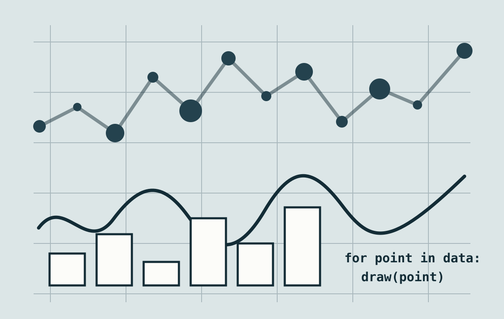

OT: 콘텐츠 프로그래밍과 데이터 아트 ↗
기본 90분 사전 진단, 강의 개요와 핵심 개념, 생성예술·데이터 아트 공식 사례 분석, 개인 관심 분야 조사
환경 점검 Google Colab 접속과 첫 코드 실행
제출 · 관심 분야 및 프로그래밍 경험 조사서Python / Google Colab / Data art
데이터와 알고리즘을 창작의 재료로 삼아 생성 이미지, 데이터 포스터, 텍스트와 소리의 시각화를 제작하는 Python 기반 콘텐츠 프로그래밍 수업입니다.

본 강의는 Python과 Google Colab을 활용하여 데이터와 알고리즘을 기반으로 다양한 디지털 콘텐츠를 기획하고 제작하는 이론·실습 중심의 교과목이다. 프로그래밍 경험이 없는 인문학, 음악, 미술, 디자인 및 기타 전공 학생들도 참여할 수 있도록 Python의 기초 개념부터 단계적으로 학습한다. 변수, 자료형, 조건문, 반복문, 리스트, 함수 등의 프로그래밍 문법을 단순히 암기하는 방식에서 벗어나 도형, 색상, 이미지, 텍스트, 수치, 소리 등의 재료를 활용한 창작 활동을 통해 자연스럽게 이해하도록 구성한다. 학생들은 좌표와 색상의 원리를 바탕으로 디지털 이미지를 제작하고, 반복과 무작위성, 조건과 매개변수를 활용하여 실행할 때마다 서로 다른 결과가 만들어지는 생성예술의 원리를 학습한다. 또한 기존 이미지를 불러와 자르기, 크기 변경, 픽셀 변형 및 합성 등의 작업을 수행하며 디지털 이미지가 데이터로 구성되는 방식을 이해한다.
수업의 후반부에는 개인의 일상, 전공, 사회적 관심사와 관련된 데이터를 직접 수집하거나 공개된 자료를 활용하여 데이터를 정리하고 분석하며, 이를 시각적 콘텐츠로 변환하는 방법을 학습한다. 수치 데이터뿐만 아니라 시, 소설, 가사, 대사 등의 텍스트 자료와 음악, 목소리 등의 소리 자료도 데이터로 해석하여 새로운 이미지와 시각적 표현으로 발전시킨다. 매주 1·2교시에는 생성예술, 데이터 아트, 정보 시각화의 주요 개념과 사례를 살펴보고 코드의 구조와 표현 원리를 이해한다. 3교시에는 해당 개념을 Python 코드와 개인 창작 결과물로 구현한다. 이 과정에서 데이터의 선택과 해석, 개인정보, 저작권, 시각화의 왜곡 등 디지털 콘텐츠 제작자가 고려해야 할 윤리적 문제도 함께 다룬다. 중간 프로젝트에서는 규칙 기반의 생성 이미지 또는 포스터 시리즈를 제작하고, 기말 프로젝트에서는 자신의 전공이나 관심 분야를 데이터와 알고리즘으로 재해석한 독창적인 디지털 콘텐츠를 기획, 제작하고 발표한다.
본 강의는 학생들이 Python 프로그래밍의 기본 개념과 구조를 이해하고 이를 자신의 아이디어를 구현하기 위한 창작 도구로 활용할 수 있도록 하는 것을 목표로 한다. 학생들은 컴퓨터에 명령을 전달하는 방식과 프로그램이 정보를 처리하는 과정을 이해하고, 복잡한 아이디어를 작은 규칙과 단계로 나누어 설계하는 컴퓨테이셔널 사고 능력을 기른다. 변수, 자료형, 조건문, 반복문, 리스트 및 함수 등의 기초 문법을 이미지 생성과 데이터 시각화 실습에 적용함으로써 프로그래밍 개념과 실제 결과물 사이의 관계를 이해한다. 좌표, 색상, 형태, 반복, 우연성, 매개변수 등의 요소를 이용하여 하나의 결과물을 직접 만드는 것에서 나아가 다양한 결과를 지속적으로 생성할 수 있는 규칙과 시스템을 설계한다.
이미지, 텍스트, 수치, 소리 등 서로 다른 형식의 자료를 수집하고 정리하며, 자료가 가진 특징을 시각적 요소로 변환하는 과정을 경험한다. 또한 생성예술과 데이터 아트, 정보 시각화의 주요 작품을 분석하여 작품에 적용된 알고리즘과 데이터의 역할을 파악하고, 기술적 구조와 예술적 표현이 결합되는 방식을 탐구한다. 학생들이 자신의 전공 지식, 개인적 경험 및 사회적 관심사를 프로그래밍 프로젝트의 주제로 발전시켜 각자의 전공적 특성이 반영된 결과물을 제작하도록 한다. 제작 과정에서 발생하는 오류와 예상하지 못한 결과를 새로운 가능성을 발견하고 문제를 해결하는 과정으로 받아들이며, 데이터의 수집과 선택, 표현 방식에 따라 의미가 달라질 수 있음을 이해한다. 최종적으로 작품의 기획 의도와 데이터의 의미, 알고리즘의 작동 원리 및 제작 과정을 스스로 설명하고 교수자의 피드백을 반영하여 프로젝트를 수정하고 완성하는 능력을 기르는 것을 목표로 한다.
본 강의를 이수한 학생은 Google Colab의 기본 환경을 이해하고 Python 코드를 작성, 실행, 수정하며 자신의 노트북 파일을 저장하고 공유할 수 있다. 변수와 자료형, 조건문, 반복문, 리스트 및 함수 등의 기초 프로그래밍 문법을 이해하고 이를 활용한 간단한 프로그램을 독립적으로 작성할 수 있다. 디지털 이미지의 좌표, 픽셀 및 RGB 색상 구조를 이해하고 도형, 색상, 크기와 배치를 조절하여 시각적 결과물을 생성할 수 있으며, 반복과 난수, 조건 및 매개변수를 활용하여 실행할 때마다 일정한 규칙 안에서 서로 다른 결과가 생성되는 이미지 시스템을 설계할 수 있다. 외부 이미지를 프로그램으로 불러와 자르기, 크기 변경, 색상 조절, 픽셀 변형 및 이미지 합성 등의 작업을 수행하고 결과물을 적절한 파일 형식으로 저장할 수 있다.
CSV 등의 데이터 파일을 Colab으로 불러오고 필요한 정보를 정렬, 필터링, 분류 및 요약하여 시각화에 적합한 형태로 가공할 수 있다. 데이터의 특성과 표현 목적에 따라 색상, 형태, 위치, 크기 및 배치 등의 시각 요소를 선택하여 데이터 포스터 또는 시각화 작품으로 제작할 수 있으며, 시·소설·가사·대사 등의 텍스트 자료와 음악·목소리 등의 소리 자료를 데이터로 해석해 이미지 또는 그래프로 변환할 수 있다. 생성예술과 데이터 시각화 작품에 사용된 규칙과 표현 방식을 분석하고 데이터의 출처와 신뢰성, 개인정보, 저작권 및 시각화의 윤리적 문제를 비판적으로 검토할 수 있다. 또한 자신이 작성한 코드의 핵심 구조와 작동 원리를 설명하고 오류를 찾아 수정하며, 피드백을 반영하여 결과물을 개선할 수 있다. 최종적으로 자신의 전공 또는 관심 분야와 관련된 자료를 선정하고 이를 데이터와 알고리즘을 활용한 디지털 콘텐츠로 기획, 제작, 발표할 수 있다.
주 3시간: 1·2교시 이론 + 3교시 개인 실습
기본 90분 사전 진단, 강의 개요와 핵심 개념, 생성예술·데이터 아트 공식 사례 분석, 개인 관심 분야 조사
환경 점검 Google Colab 접속과 첫 코드 실행
제출 · 관심 분야 및 프로그래밍 경험 조사서1·2교시 · 이론 1교시: 컴퓨터는 어떻게 코드를 실행하는가 ↗ / 2교시: 변수와 자료형 ↗
3교시 · 목표 달성형 개인 실습 자기소개 데이터 미션 ↗ · 자동 검사 PASS와 파일 제출을 완료하면 즉시 퇴실
제출 · 자기소개 Colab 노트북1·2교시 · 이론 디지털 이미지의 좌표, 픽셀, RGB 색상
3교시 · 개인 실습 Pillow를 활용한 도형 그리기와 이미지 저장
제출 · 기하학적 이미지 제작1·2교시 · 이론 1교시: 반복이 리듬이 되는 원리 ↗ / 2교시: 리스트와 중첩 반복으로 격자 만들기 ↗
3교시 · 목표 달성형 개인 실습 나만의 리듬 그리드 미션 ↗ · 자동 검사 PASS와 두 파일 제출 완료 시 즉시 귀가
제출 · 리듬 그리드 PNG 및 Colab 노트북1·2교시 · 이론 우연성, 규칙, 알고리즘적 창작의 개념
3교시 · 개인 실습 난수와 조건문을 활용한 생성 이미지 제작
제출 · 규칙 기반 생성 이미지1·2교시 · 이론 시스템, 함수, 매개변수와 변주의 원리
3교시 · 개인 실습 색상, 크기, 개수를 조절하는 이미지 생성기 제작
제출 · 매개변수형 이미지 생성기6주차 연결 create_poster()로 생성한 세 이미지를 완성품이 아니라 다시 사용할 수 있는 시각 재료로 불러온다. 자신의 6주차 결과물이 없으면 수업에서 제공하는 대체 이미지를 사용해 같은 학습 목표를 수행한다.
1교시 · 원본을 보존하며 이미지 변형하기 ↗ Image.open()으로 파일을 불러오고 copy(), crop(), resize(), rotate()가 각각 새 이미지 객체를 만드는 흐름을 읽는다. 원본·작업본·결과물을 다른 변수와 파일명으로 구분하고, 자르기 좌표·가로세로 비율·회전 후 경계가 결과에 미치는 영향을 비교한다.
2교시 · RGBA 레이어 합성과 책임 있는 이미지 이용 ↗ RGB와 RGBA의 차이, 알파 값의 투명도, 캔버스와 레이어의 크기·위치·쌓이는 순서를 이해하고 alpha_composite()로 여러 이미지를 합성한다. 외부 이미지는 변형과 재이용이 허용된 자료인지 먼저 확인하고, 제목·창작자·원본 주소·라이선스·변형 내용을 노트북에 기록한다.
3교시 · 목표 달성형 개인 실습 ↗ 6주차 결과물 또는 대체 이미지에서 작업본을 만들고, 자르기·크기 변경·회전을 적용한 변형 레이어 세 개 이상을 1000 × 1000 RGBA 캔버스에 합성한다. 프로토타입 PNG를 저장하고 새 세션 전체 실행에서 자동 검사 PASS를 받은 뒤 Colab 노트북과 PNG 두 파일 제출을 완료하면 즉시 귀가한다.
8주차 연결 완성한 프로토타입에서 유지할 생성 규칙, 바꿀 매개변수, 출처 기록을 확정하고 중간고사의 생성 포스터 시리즈 제작 계획으로 발전시킨다.
제출 · 변형·합성 프로토타입 PNG 및 Colab 노트북중간고사(3시간) 변수, 반복문, 조건문, 함수 등을 활용한 개인 실기 프로젝트
제출 · 생성 포스터 시리즈 및 Colab 노트북8주차 연결 중간고사에서 제작한 생성 포스터 시리즈를 결과 이미지로만 보지 않고, 각 포스터에 사용한 매개변수인 시드·도형 수·크기 기준·팔레트와 관찰된 결과를 하나의 기록으로 다시 읽는다. 포스터 한 장을 한 행, 비교할 항목을 열로 놓아 이미지 생성 경험을 표 데이터의 구조와 연결한다.
1교시 · 데이터는 발견되는가, 만들어지는가 강의 자료 ↗ · 데이터가 주어진 사실의 묶음이 아니라 질문에 따라 대상을 관찰하고 기준을 정해 기록한 결과임을 이해한다. 관찰 단위, 변수, 값, 메타데이터를 일상의 기록 예시로 구분한다. Dear Data와 The Library of Missing Datasets를 비교하여 무엇을 기록했는지뿐 아니라 누가 무엇을 선택했고 무엇을 누락했는지 살피며, 데이터가 완전히 중립적인 재료가 아님을 개별 관찰 질문으로 확인한다.
2교시 · CSV와 DataFrame의 구조 읽기 강의 자료 ↗ · 쉼표로 값을 구분하는 CSV 파일과 pandas의 DataFrame을 처음 접하고 행, 열, 헤더, 인덱스, 셀의 역할을 실제 표와 연결한다. 수치, 범주, 문자열, 날짜 자료형과 결측값을 구분하고 pd.read_csv(), head(), shape, columns, dtypes, isna().sum()의 출력으로 파일의 앞부분·크기·열 이름·자료형·빈 값을 차례대로 점검한다. 이번 주에는 시각화와 통계 계산보다 데이터가 무엇을 담고 있는지 정확히 설명하는 데 집중한다.
3교시 · 목표 달성형 개인 실습 실습 자료 ↗ · 수업용 창작 활동 기록 CSV를 DataFrame으로 불러오고 원본을 수정하지 않은 채 여섯 가지 구조 검사를 실행한다. 노트북 안에 제목, 출처, 이용 조건, 관찰 단위, 시간 범위를 기록하고, 실제 행·열·값의 예를 자신의 문장으로 설명한다. 현재 열로 답할 수 있는 질문 한 개와 누락된 정보 때문에 답할 수 없는 질문 한 개를 작성하고 데이터 읽기 카드 HTML을 생성한다. 마지막 자동 검사 PASS와 Colab 노트북·HTML 두 파일 제출을 완료하면 즉시 귀가한다.
10주차 연결 자신의 관심 분야에서 개인 기록 또는 공공데이터 후보 하나를 고르고 수집 단위, 필요한 열, 예상 자료형, 기록 기간과 개인정보 제외 기준을 정한다. 다음 주에는 이 설계를 바탕으로 실제 데이터를 수집하고 일관된 표로 정리한다.
제출 · CSV 탐색 Colab 노트북 및 데이터 읽기 카드 HTML1·2교시 · 이론 데이터 수집, 분류, 개인정보와 윤리
3교시 · 개인 실습 데이터 정렬, 필터링, 그룹화 및 기초 통계
제출 · 기말 프로젝트용 데이터셋1·2교시 · 이론 시각적 인코딩, 그래프의 표현과 왜곡
3교시 · 개인 실습 matplotlib을 활용한 색상, 크기, 레이아웃의 시각적 변형
제출 · 데이터 포스터1·2교시 · 이론 텍스트를 데이터로 보는 방법과 해석의 한계
3교시 · 개인 실습 시, 소설, 가사, 대사의 단어 분리, 빈도 계산 및 시각화
제출 · 텍스트 시각화 작품1·2교시 · 이론 소리의 디지털 표현, 파형과 주파수
3교시 · 개인 실습 음악·목소리 시각화 및 기말 프로젝트 주제 확정
제출 · 기말 프로젝트 기획서 및 기초 프로토타입1·2교시 · 이론·면담 프로젝트 기획과 작품 구성 방법, 작품 주제와 코드 구조 개별 점검
3교시 · 개인 제작 입력 자료와 시각화 규칙을 적용한 프로토타입 제작
제출 · 기말 프로젝트 30% 프로토타입1·2교시 · 이론·면담 결과물 선별과 작품 비평 방법, 오류와 발표 내용 개별 점검
3교시 · 개인 제작 피드백을 반영한 코드 수정과 시각적 완성도 개선
제출 · 기말 프로젝트 70% 프로토타입기말평가(3시간) 자신의 전공 또는 관심 분야를 활용한 데이터 기반 콘텐츠 발표와 상호평가
제출 · 최종 작품, Colab 노트북 및 작품설명서